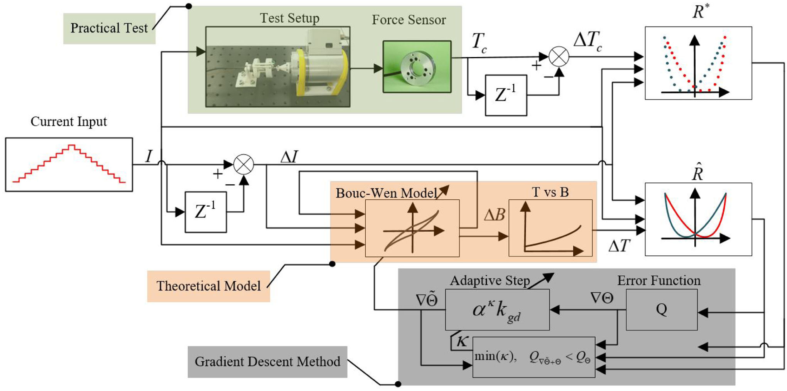

About
Zheng Liu is a Research Associate in robotics at the University of Manchester.
Education Background
| 2010-2014 | the Harbin Institute of Technology | Bachelor |
| 2014-2017 | CASIC | Master |
| 2023-2024 | the University of Hamburg | PhD |
| 2020-2024 | Shanghai Jiao Tong University | PhD |
Working Background
| 2017-2019 | CASIC |
| 2019-2020 | Agile Robots |
Research interests
- Medical Robotics
- Physical Human-Robot Interaction
- Teleoperation
Contact
zhengliu-2@manchester.ac.uk
Publications
- An Autonomous Guidewire Delivery Method With Distal Position-Based Impedance Control
- Optimal Control for a Modified Bouc-Wen Model in a Magnetorheological Fluid Master Robot
- A Magnetorheological Fluid Based Force Feedback Master Robot for Vascular Interventional Surgery
- A General Huber Function Based Compliant Control Method for the Cooperative Puncture Surgery.
Liu, Z., Wang, S., Cao, Y., Cao, Z., Lin, L., & Xie, L. (2024). IEEE Transactions on Automation Science and Engineering, 1-15. doi:10.1109/TASE.2024.3368764
Liu, Z., Wang, S., Cao, Y., Cheng, H., & Xie, L. (2022). IEEE Robotics and Automation Letters, 7(4), 11609-11616. doi:10.1109/lra.2022.3204877

Liu, Z., Wang, S., Feng, F., & Xie, L. (2022). Journal of Intelligent & Robotic Systems, 2022. 106(1): p. 20.
Liu, Z., Dai, Q., Wang, S., & Xie, L. (2023, 4-9 Dec). IEEE International Conference on Robotics and Biomimetics.